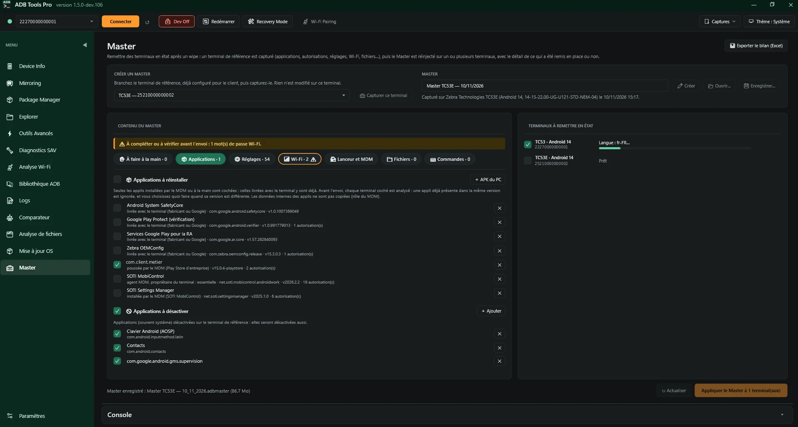
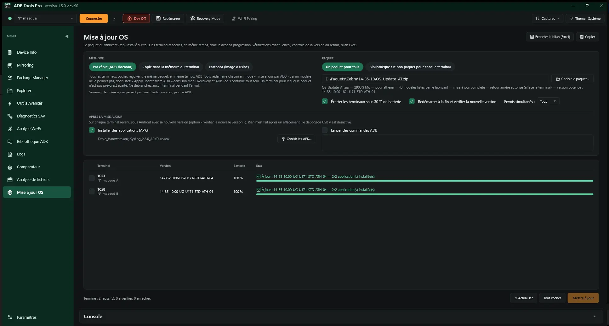
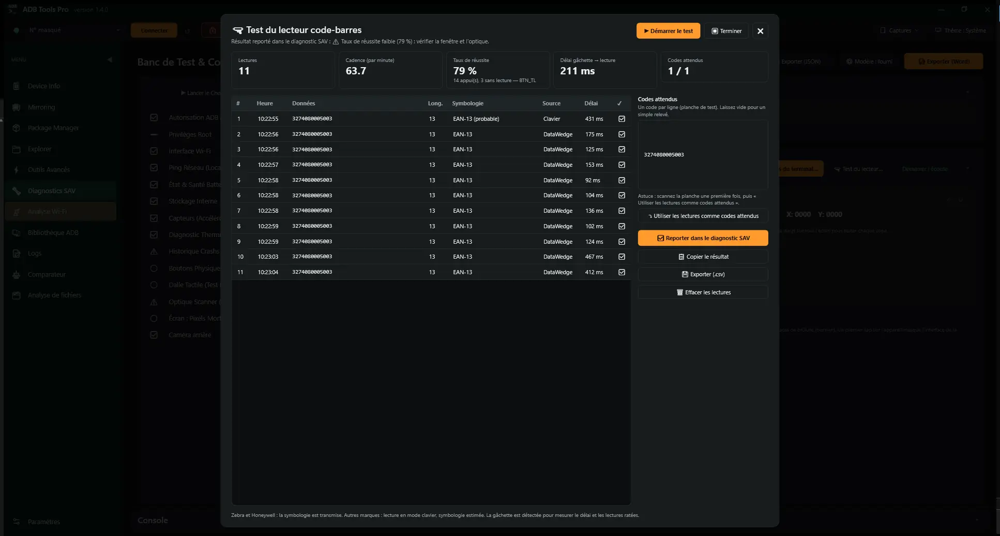
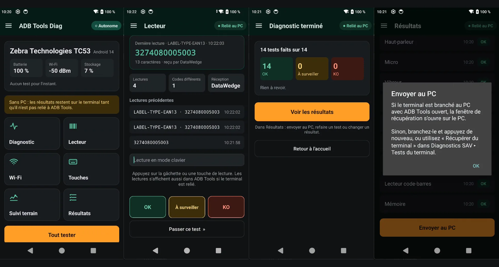
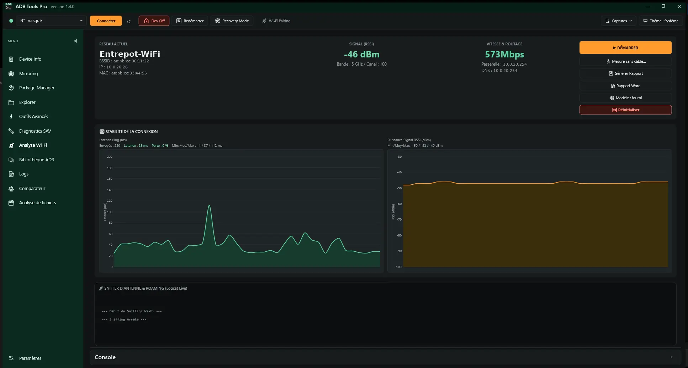
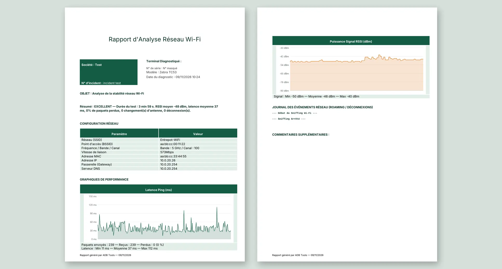
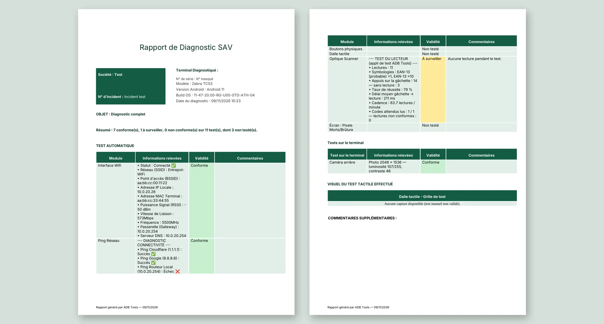

La boîte à outils du technicien Android
Diagnostiquer, tester et dépanner un smartphone, une tablette ou un terminal durci de logistique depuis un PC Windows. Gratuit, libre, sans une seule ligne de commande.

Un terminal revient en SAV
ADB Tools Pro aide à trouver ce qui ne va pas, matériel, réseau ou logiciel, puis à le prouver avec un rapport Word propre à remettre au client. Il fonctionne avec toutes les marques : Zebra, Honeywell, Datalogic, Samsung et les autres.
L'écran ne réagit plus par endroits
La dalle tactile se teste en remplissant une grille, et chaque appui s'affiche en direct sur le PC. Boutons physiques, pixels morts, caméras, haut-parleur, micro, vibreur, capteurs, NFC, GPS : chaque test fait est noté dans le rapport.Diagnostics SAV, Laboratoire
Le Wi-Fi décroche dans l'entrepôt
Le terminal mesure le Wi-Fi seul, débranché, pendant que vous parcourez le site : signal, borne, canal, ping chaque seconde, avec des repères comme « Quai 3 ». Au retour, graphiques, changements de borne, coupures et bilan par zone.Analyse Wi-Fi, Mesure sans câble
Le scanner ne lit plus rien
Une petite appli de test affiche chaque lecture, sa symbologie et le délai depuis l'appui sur la gâchette. Les lectures ratées et les écarts avec une planche de codes attendus ressortent tout de suite.Diagnostics SAV, Test du lecteur
L'appli plante, mais jamais quand vous êtes là
L'enregistreur terrain garde le journal Android pendant des heures, terminal débranché. L'utilisateur signale l'incident d'un appui. Au retour, ADB Tools ouvre l'enregistrement sur l'incident et montre ce qui a changé juste avant.Analyse de fichiers, Enregistreur terrain
Il faut passer tout le parc à la dernière version
Branchez les terminaux, choisissez le paquet du fabricant ou votre dossier de paquets : chacun reçoit le bon, en même temps, après vérification du modèle, de la version et de la batterie. Au retour, la nouvelle version est contrôlée et les applications du client réinstallées ; le bilan part dans Excel.Mise à jour OS
Le terminal revient d'un wipe, il faut tout remettre comme avant
Capturez un terminal de référence déjà configuré pour le client : applis, autorisations, réglages, langue, heure, Wi-Fi, lanceur, MDM. Complétez ce qui ne se récupère pas, puis réinjectez-le sur un ou plusieurs terminaux. Chacun est analysé avant l'envoi, et le bilan dit ce qui a été remis en place ou non.Master
Tout ce qu'il fait
Chaque outil s'appuie sur ADB, l'outil officiel de Google, caché derrière une interface pensée pour le terrain.
Tableau de bord
- Batterie, mémoire, processeur et stockage en jauges colorées.
- Modèle, version d'Android, build, numéro de série, écran.
- Plusieurs terminaux branchés, une commande lancée sur tous.
- Connexion sans câble, Android 10 et moins comme 11 et plus.
Mirroring
- L'écran du terminal affiché et contrôlé sur le PC (scrcpy).
- Capture d'écran et enregistrement vidéo.
- Filigrane société, modèle et date pour les preuves SAV.
Diagnostics SAV
- Check-up automatique : Wi-Fi, ping, batterie, stockage, capteurs, températures.
- Tests guidés du matériel et test du lecteur code-barres.
- Chaque ligne en Pass, Fail, À surveiller ou Non testé.
- Comparateur : deux terminaux, ou un terminal et sa référence validée.
Analyse Wi-Fi
- Latence, pertes et signal en direct, en graphiques.
- Changements de point d'accès et déconnexions détectés.
- Mesure sans câble pendant le parcours du site, bilan par zone.
Journaux
- Analyse automatique : plantages, ANR, mémoire, Wi-Fi, batterie, lecteur, avec un conseil pour chaque problème.
- Analyse de fichiers : archive RxLogger Zebra, bugreport ou logcat, frise par sujet, aller à l'incident.
- Redémarrages et leur cause, vie de l'appli métier, pannes connues de l'équipe.
- Enregistreur terrain avec signalement d'incident.
Mise à jour OS
- Plusieurs terminaux en même temps, chacun avec sa progression.
- Par câble, copie dans la mémoire du terminal ou fastboot.
- Modèle, version et batterie vérifiés avant l'envoi ; bon paquet choisi pour chaque modèle.
- Contrôle de la version au retour, applis installées, bilan Excel.
Master Nouveau en 1.6
- Remise en état après un wipe : capture d'un terminal de référence, ou Master créé à la main.
- Applis, réglages en clair, langue et heure, Wi-Fi, lanceur, MDM, fichiers DataWedge.
- Chaque terminal analysé avant l'envoi, choix par appli selon sa version.
- Bilan de ce qui a été remis en place ou non, export Excel.
Applications et outils
- Installer des APK par glisser-déposer, Split-APK compris.
- Explorateur de fichiers du terminal.
- Boutons simulés, luminosité, affichage, son.
- Bibliothèque de commandes ADB, à compléter avec les vôtres.
Rapports, équipe et confort
- Rapports Word à votre en-tête et votre logo, modèles personnalisables.
- Historique par numéro de série, partageable en dossier réseau.
- Profil d'équipe : un fichier pour configurer tous les postes pareil.
- Mises à jour vérifiées et installées en un clic.
- Thème clair, sombre ou comme Windows ; interface en français ou en anglais.
- Taille de l'interface réglable et visite guidée au premier lancement.
En images
Captures en thème sombre, sur des Zebra TC58 et TC53. Numéros de série et réseau masqués. Cliquez pour agrandir.

















Démarrer en trois étapes
-
Télécharger
Récupérez
ADBToolsPro-x.y.z.zipsur la page des versions et décompressez-le où vous voulez. Rien n'est installé dans Windows. -
Lancer
Ouvrez
ADBToolsNew.exe. Au premier lancement, ADB Tools propose de télécharger ADB et scrcpy depuis leurs sites officiels, environ 20 Mo. -
Brancher le terminal
Activez les options développeur puis le débogage USB, branchez le câble et acceptez la demande d'autorisation sur l'écran du terminal.
Il faut Windows 10 ou 11 avec .NET Framework 4.7.2 ou plus récent, déjà présent sur un Windows à jour. Ensuite, le programme se met à jour lui-même depuis GitHub ou depuis le dossier de diffusion de votre équipe.
Tout reste sur le PC
Aucun rapport, aucune capture, aucune donnée de terminal n'est envoyé sur Internet. Pas de compte, pas de publicité, pas de mesure d'audience.
Le code est ouvert : chacun peut vérifier ce que fait le programme, sous licence GNU GPL v3.
Les seules connexions servent à télécharger les outils tiers depuis leurs sources officielles et à vérifier les mises à jour, au plus une fois par jour :
dl.google.comADB et Fastbootgithub.comscrcpy et mises à jourwww.gyan.devFFmpeg, seulement pour le filigrane vidéo
Questions fréquentes
Est-ce vraiment gratuit ?
Oui, et libre : ADB Tools Pro est publié sous licence GNU GPL v3. Vous pouvez l'utiliser en entreprise, le diffuser à votre équipe et lire son code.
Quels terminaux sont pris en charge ?
Tout appareil Android sur lequel le débogage USB peut être activé : terminaux durcis Zebra, Honeywell, Datalogic, Newland, Urovo, smartphones et tablettes. Les tests du terminal fonctionnent d'Android 8 à Android 16 ; un test impossible sur un modèle est grisé.
Faut-il installer quelque chose sur le terminal ?
Non pour la plupart des fonctions. Les tests du terminal, le test du lecteur, la mesure Wi-Fi sans câble et l'enregistreur terrain utilisent une petite appli de diagnostic, installée le temps du test puis retirée.
Windows affiche un avertissement au premier lancement
Le programme n'est pas signé par un certificat payant, donc SmartScreen peut afficher « Windows a protégé votre ordinateur ». Cliquez sur « Informations complémentaires » puis « Exécuter quand même ». Vous pouvez comparer l'empreinte SHA-256 de l'archive avec celle publiée sur la page de la version.
Peut-on adapter les rapports à notre société ?
Oui. Votre société, vos coordonnées et votre logo s'affichent en en-tête, et les modèles Word se modifient dans Word ou se remplacent par les vôtres, avec des balises comme {{SOCIETE}} ou {{NUMERO_SERIE}}. Un profil d'équipe applique les mêmes réglages à tous les postes.
Où poser une question ou signaler un problème ?
Les questions vont dans les Discussions, les bugs et les idées dans les tickets. Pensez à retirer des captures les noms de réseau, de société et les numéros de série.